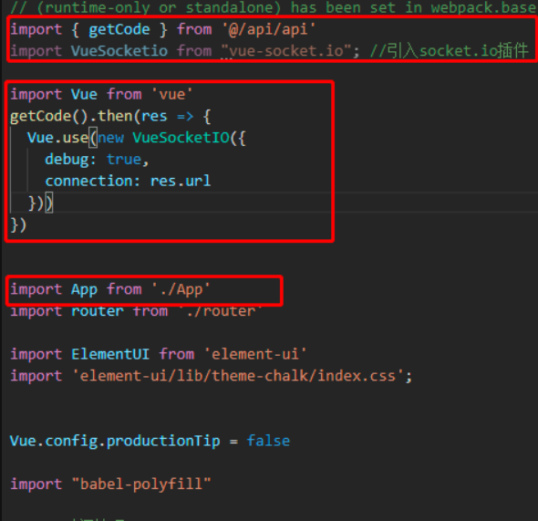
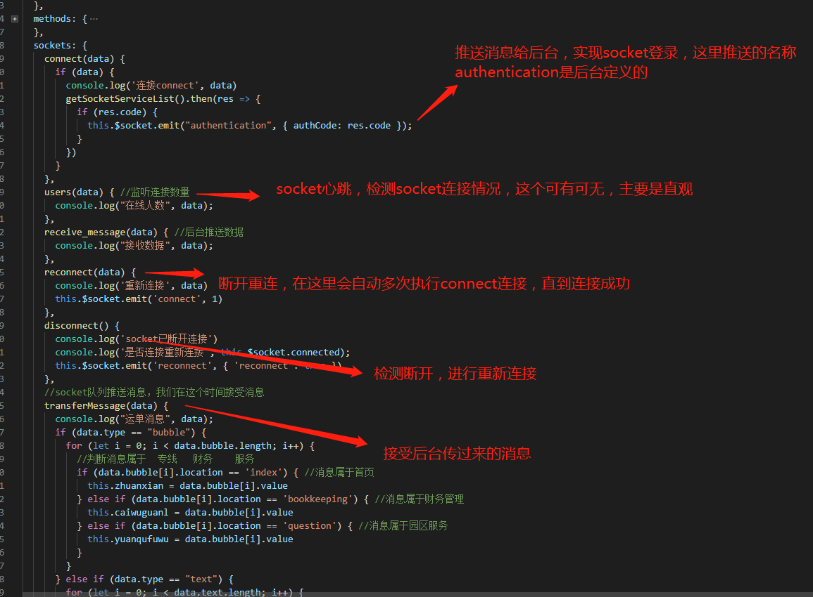

问题缘起
最近接手了一个小项目，数据通信选型使用
Socket实现，因此，恶补WebScoket的概念和vue-socket-io的使用
一、WebSocket 基础
这一部分还是廖雪峰老师讲的好，附上传送门
当然，我个人还是要记录一下，可能是
CTRL-C/V，但权当再加深印象
1. HTTP 协议和 WebSocket 的区别？它能带来什么好处？
答案很简单，因为 HTTP 协议有一个缺陷：通信只能由客户端发起。
这种单向请求的特点，注定了如果服务器有连续的状态变化，客户端要获知就非常麻烦。我们只能使用“轮询”：每隔一段时候，就发出一个询问，了解服务器有没有新的信息。最典型的场景就是聊天室。
轮询的效率低，非常浪费资源（因为必须不停连接，或者 HTTP 连接始终打开）。因此，工程师们一直在思考，有没有更好的方法。WebSocket 就是这样发明的。
WebSocket 协议在2008年诞生，2011年成为国际标准。所有浏览器都已经支持了。
它的最大特点就是，服务器可以主动向客户端推送信息，客户端也可以主动向服务器发送信息，是真正的双向平等对话，属于服务器推送技术的一种。

其他特点包括：
（1）建立在 TCP 协议之上，服务器端的实现比较容易。
（2）与 HTTP 协议有着良好的兼容性。默认端口也是80和443，并且握手阶段采用 HTTP 协议，因此握手时不容易屏蔽，能通过各种 HTTP 代理服务器。
（3）数据格式比较轻量，性能开销小，通信高效。
（4）可以发送文本，也可以发送二进制数据。
（5）没有同源限制，客户端可以与任意服务器通信。
（6）协议标识符是ws（如果加密，则为wss），服务器网址就是 URL。
1 | ws://example.com:80/some/path |

2. 客户端的简单示例
WebSocket 的用法相当简单。
下面是一个网页脚本的例子（点击这里看运行结果），基本上一眼就能明白。
1 | var ws = new WebSocket("wss://echo.websocket.org"); |
3. 客户端的 API
WebSocket 客户端的 API 如下。
3.1 WebSocket 构造函数
WebSocket 对象作为一个构造函数，用于新建 WebSocket 实例。
1 | var ws = new WebSocket('ws://localhost:8080'); |
执行上面语句之后，客户端就会与服务器进行连接。
实例对象的所有属性和方法清单，参见这里。
3.2 webSocket.readyState
readyState属性返回实例对象的当前状态，共有四种。
- CONNECTING：值为0，表示正在连接。
- OPEN：值为1，表示连接成功，可以通信了。
- CLOSING：值为2，表示连接正在关闭。
- CLOSED：值为3，表示连接已经关闭，或者打开连接失败。
下面是一个示例。
1 | switch (ws.readyState) { |
3.3 webSocket.onopen
实例对象的onopen属性，用于指定连接成功后的回调函数。
1 | ws.onopen = function () { |
如果要指定多个回调函数，可以使用addEventListener方法。
1 | ws.addEventListener('open', function (event) { |
3.4 webSocket.onclose
实例对象的onclose属性，用于指定连接关闭后的回调函数。
1 | ws.onclose = function(event) { |
3.5 webSocket.onmessage
实例对象的onmessage属性，用于指定收到服务器数据后的回调函数。
1 | ws.onmessage = function(event) { |
注意，服务器数据可能是文本，也可能是二进制数据（blob对象或Arraybuffer对象）。
1 | ws.onmessage = function(event){ |
除了动态判断收到的数据类型，也可以使用binaryType属性，显式指定收到的二进制数据类型。
1 | // 收到的是 blob 数据 |
3.6 webSocket.send()
实例对象的send()方法用于向服务器发送数据。
发送文本的例子。
1 | ws.send('your message'); |
发送 Blob 对象的例子。
1 | var file = document |
发送 ArrayBuffer 对象的例子。
1 | // Sending canvas ImageData as ArrayBuffer |
3.7 webSocket.bufferedAmount
实例对象的bufferedAmount属性，表示还有多少字节的二进制数据没有发送出去。它可以用来判断发送是否结束。
1 | var data = new ArrayBuffer(10000000); |
3.8 webSocket.onerror
实例对象的onerror属性，用于指定报错时的回调函数。
1 | socket.onerror = function(event) { |
4. 服务端的实现
WebSocket 服务器的实现，可以查看维基百科的列表。
常用的 Node 实现有以下三种。
二、WebSocket实现之Socket.io
官网里的demo很多，看官网就好
三、Vue-Socket-io 实现及使用
推荐参考文档 vue-socket.io
参考自简书 候鸟与暖风
推荐和我一样的踩坑博文
1. 下载vue-socket-io依赖
1 | npm install vue-socket.io --save |
2. 引入到vue-cli项目中
引入的方式有两种情形，一种固定地址，一种动态地址
a.第一种情景
webSocket连接的地址是固定的
1 | //在main.js中直接这样写 |
原博主还提到：连接方式很多直接在main.js中如下这样写：
1 | import VueSocketio from 'vue-socket.io'; |
b.第二种情形
webSocket连接的地址的是动态的，是后台通过接口传给我们的

这里要提示的一点就是，当连接的地址是动态的，代码的执行顺序就很重要了，即new VueSocket在main.js中的位置
3. 在mounted中执行connect
a.当socket地址是静态的写法
1 | mounted(){ |
b.当socket地址是动态的
因为此时的socket连接地址是动态的，就会存在请求响应然后渲染的时间，这个时候就会出现socket还没渲染成功就执行了App.vue，这时候connect连接事件就不会触发，所以采用定时器的方法来执行connect
1 | mounted() { |
4. 推送消息给后台，连接socket
1 | <script> |

5. socket连接成功
因为我们在 new VueSocketIO中开启了debug: true，就会在控制台中出现那些蓝色debug信息，来帮助我们调试socket
注意：如果蓝色的字中，没有包含我们在socket中定义的事件（connect、users、reconnect……），那就可能是我们在main,js中创建的new VueSocketIO渲染时间有问题,这个时候，connect事件也不会执行
6. 后台定义的事件
如图上所示user、transferMessage这些名词，都是后台自定义的，每个项目中可能都会有所不同，我们接受消息的事件就是靠后台来告诉我们的
vue-socket.io中自带的几个事件
connect:查看socket是否渲染成功
disconnect:检测socket断开连接
reconnect:重新连接socket事件